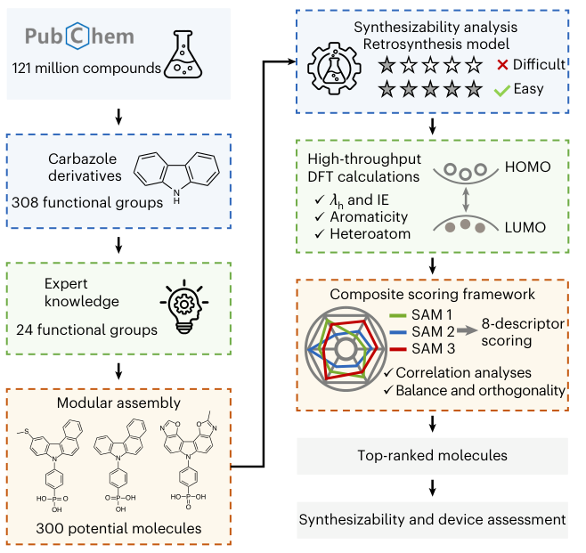
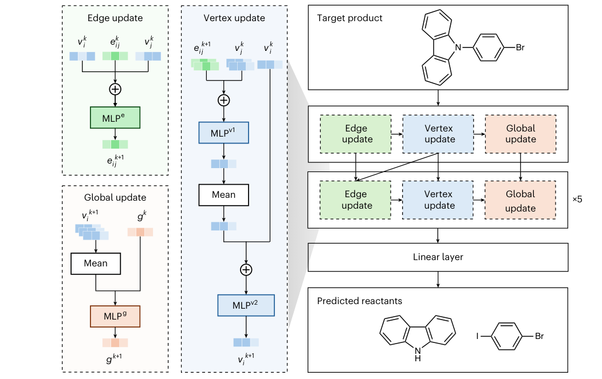
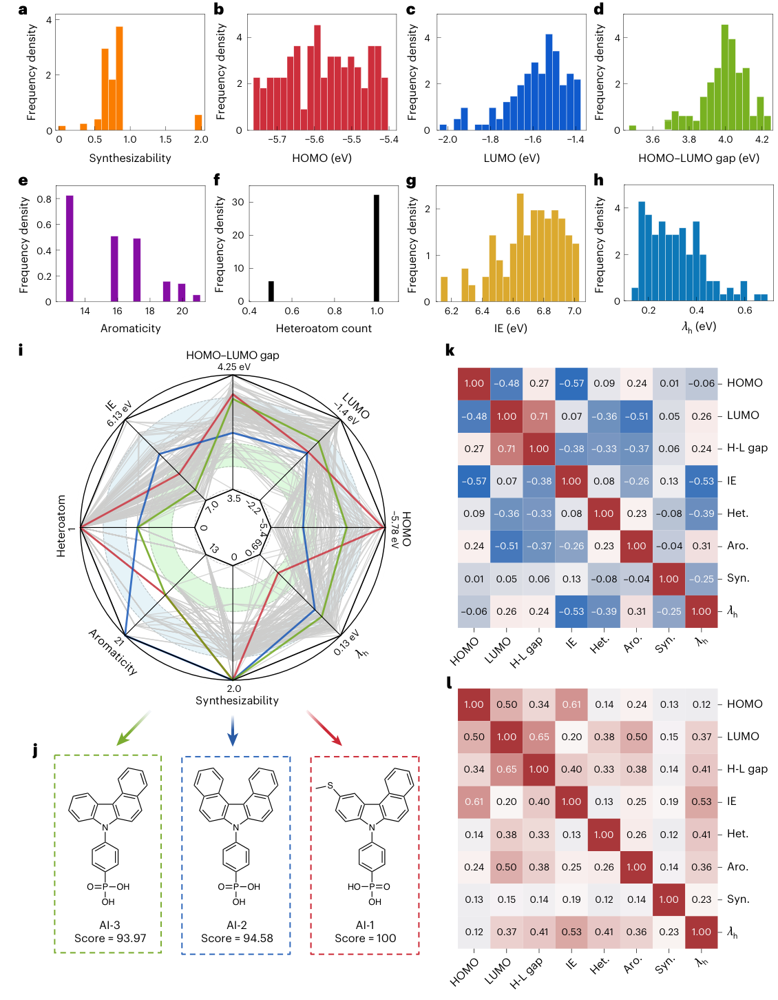
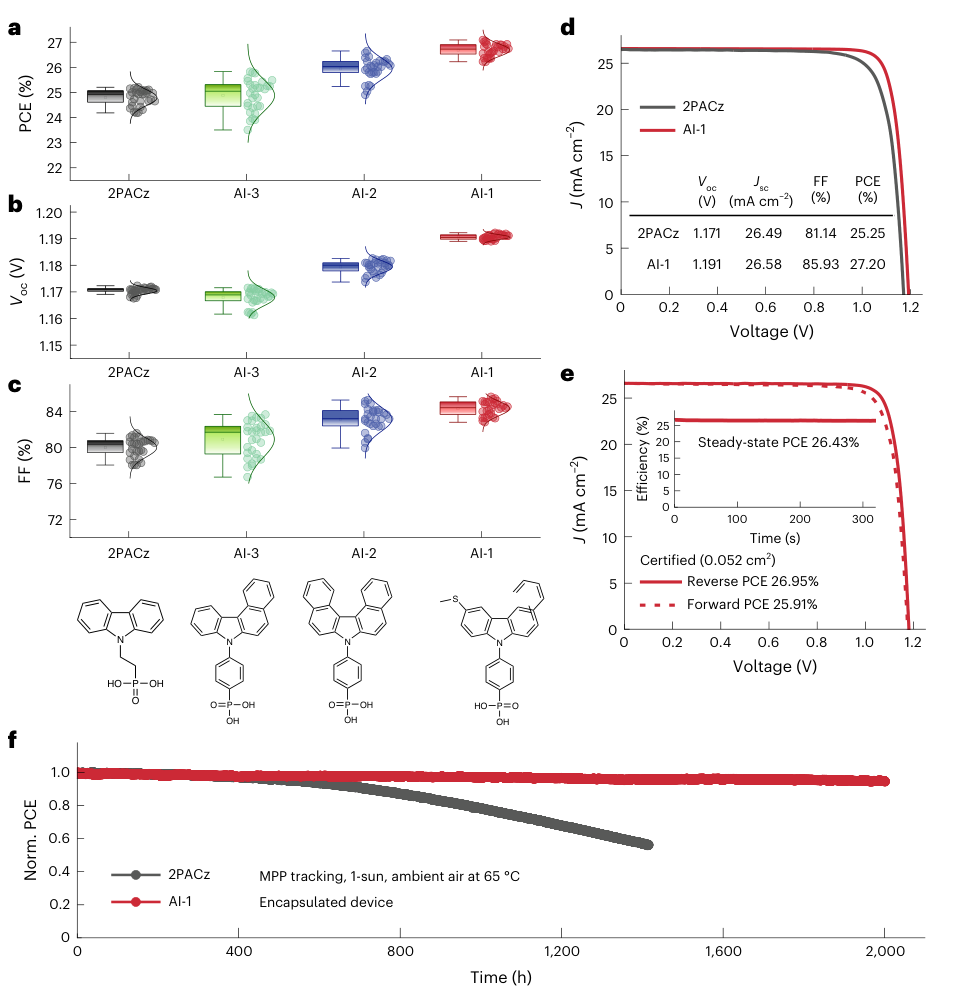
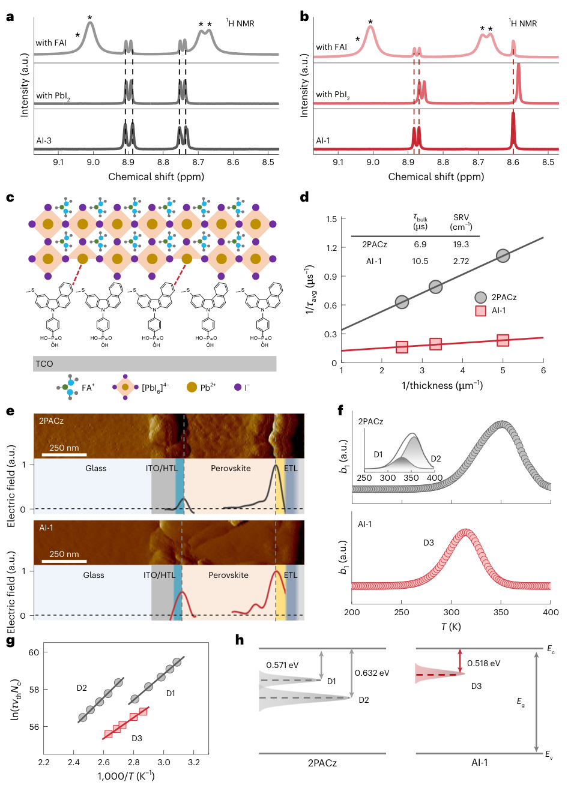

AI-SAM：把“能合成、能传输、能稳住界面”一起纳入分子设计
论文原文 ↗原文：Fengchun Cai、Geping Qu、Baicheng Zhang 等，AI-guided discovery of self-assembled monolayers combining synthetic accessibility and interfacial stability for perovskite solar cells，Nature Synthesis，2026。 官方页面 · · 代码
钙钛矿太阳能电池里，有一层很薄、却同时决定电荷输运和器件寿命的有机分子层。它位于透明导电电极与钙钛矿吸光层之间：分子的一端锚定电极，另一端接触钙钛矿，帮助抽取空穴，并影响界面缺陷及分子的排列。这类分子能在表面形成自组装单分子层，简称 SAM。
设计它的困难在于目标相互牵制。能级合适的分子未必容易合成；扩大共轭有利于电荷传输，却未必能稳定界面；加入能与铅配位的基团，又会改变电子结构和溶液加工性质。本文的办法是先围绕可制备的分子骨架建立候选库，再把逆合成模型、DFT 计算和界面化学知识接起来。最后选出的 AI-1 不仅进入了器件实验，还揭示了一个具体设计要点：侧链可以同时调节能级、钝化缺陷和加固埋藏界面。
从片段到候选：先限定可操作的化学空间
作者选择咔唑类 SAM 作为设计对象。咔唑是含氮的稠合芳香骨架，已有成熟合成路线，也可以通过改变外围取代基来调节电子结构。候选分子共享一个模块化结构：功能化的咔唑末端、苯撑连接部分，以及用于表面锚定的膦酸基。这样，比较集中在分子末端和侧链的变化上。
从 PubChem 中的咔唑衍生物提取后，作者得到 308 种功能片段。若将它们单独或两两接到骨架上，潜在组合超过 9 万种。接下来，专家按照界面功能、乙醇或异丙醇中的溶解性，以及已有合成路线的兼容性，将片段缩减至 24 种。由这些片段进行对称或不对称组装，形成 300 个实际进入评价的候选分子。因此，后续精细计算针对的是这 300 个候选。

图1｜片段先经过化学可行性筛选，组装成候选后，再分别评价合成路线和电子结构，最后按综合得分选择实验对象。
逆合成模型怎样把“容易合成”变成分数
逆合成的输入是一个目标分子的结构，输出是可能用来制备它的反应物。本文将分子写成图：原子是节点，化学键是边；节点记录元素、杂化、芳香性和电荷，边记录键型及共轭信息。
消息传递图神经网络让相邻原子和键交换信息，逐层形成对分子局部反应环境和整体结构的表示。模型由已验证有机反应数据训练，识别可能的反应中心，再结合反应模板提出断键与前驱体。作者沿着这些预测继续向前回溯，最多进行五步，寻找可购买的起始原料。

图2｜原子、键与整分子特征依次更新，输出目标分子的前驱体；预测的前驱体继续进入下一步逆合成。
合成分数来自回溯后原料的可获得性。若预测得到的原料共为 N 个，其中可在 Molport 商业原料库中查到的有 Ncom 个，基础部分就是 Ncom/N；当所有末端原料都可购买时，再加一分，最高为 2。它将“计算上看起来不错”接到了“能否从现实原料出发”这个实际问题上。
DFT 负责算性质，综合规则负责排顺序
同一批候选随后接受统一的 DFT 评价。作者先用最高占据分子轨道 HOMO 的能量进行筛选：HOMO 与钙钛矿价带顶接近，有利于空穴从吸光层转移到接触层。以本文 1.53 eV 钙钛矿为对象，HOMO 位于 −5.8 至 −5.4 eV 的 124 个候选进入进一步比较。
完整评价包含八类描述符，分别承担不同的选择任务：
- HOMO、LUMO 和两者的能隙：考虑空穴抽取、电子阻挡及接触层的电子结构。LUMO 是最低未占据分子轨道，其位置关系到电子是否容易进入这层本应选择性输运空穴的材料。
- 绝热电离能与空穴重组能 λh：前者是中性分子变成阳离子的能量变化，后者描述电荷转移伴随的分子几何重整。它们补充单看轨道能级时遗漏的氧化和结构变化信息。
- 芳香性及杂原子含量：分别反映共轭结构，以及潜在的界面配位功能。硫、氮、氧等原子能与配位不饱和的铅位点相互作用。
- 逆合成得到的可合成性：让难以落实的候选在排序中受到影响。
作者将这些描述符转换为分数并进行综合平均，再把最高候选归一化为 100。这里，图神经网络预测合成前驱体，DFT 计算分子性质，最后的排名由描述符评分规则给出。三者在流程中各自承担明确的工作。

图3｜a–h 展示各描述符的分布，i–j 展示综合排序与前三个分子，k–l 比较描述符之间的关联。AI-1、AI-2、AI-3 的结构差异集中在共轭骨架与侧链。
得分最高的四个分子中，一个带含氟末端的候选还因醇类溶剂中溶解性差、所需原料危险而被移除。余下的 AI-1、AI-2 和 AI-3 进入合成与器件验证。AI-1 含甲硫基侧链，即 —S—CH₃；AI-2 更强调共轭骨架的扩展；AI-3 则提供较简单的比较结构。AI-2 对应此前已有报道的 SAM，AI-1 是这轮筛选优先提出并验证的功能化分子。
结果一：计算排序接上了器件效率和长期运行
作者将三种分子与常用 SAM 2PACz 比较。四组器件使用同一批 1.53 eV 钙钛矿，主要改变电极与钙钛矿之间的 SAM，每组独立制备 20 个器件。
平均光电转换效率依次为：2PACz 24.79%、AI-3 24.88%、AI-2 25.94%、AI-1 26.68%。三个候选的器件表现与综合评分顺序一致。冠军 AI-1 器件达到 27.2%，对照为 25.25%；主要改善来自开路电压和填充因子，即减少电荷损失、提高器件实际可输出的电功率。独立认证给出的反向扫描效率为 26.95%，最大功率点跟踪的稳态效率为 26.43%。

图4｜a–c 比较各组器件的效率、开路电压和填充因子；d–e 展示冠军及认证结果；f 展示封装器件在 65 ℃、连续光照和最大功率点跟踪下的效率保持情况。
长期运行同样显示了差异。在封装、65 ℃、一个太阳光强等效连续照明和最大功率点跟踪条件下，AI-1 器件运行 2,000 小时后仍保持约 95% 的初始效率；2PACz 器件约在 950 小时后已降至初始值的 80% 以下。这让分子筛选的评价落到了实际运行稳定性上。
结果二：甲硫基侧链为什么能同时改善效率和稳定性
AI-1 的优势来自侧链参与了界面化学。膦酸端负责与底部电极锚定，含硫侧链则能够接触钙钛矿中的铅位点，形成另一侧的相互作用。
作者将分子分别与碘化铅 PbI₂、甲脒碘化物 FAI 混合。AI-1 与 PbI₂ 混合后出现明显的核磁化学位移，而与 FAI 混合时变化不明显；不含相同硫功能的 AI-3 则没有对应的显著变化。结合埋藏界面的 X 射线光电子能谱，作者将其解释为侧链硫与配位不饱和 Pb²⁺ 的配位作用。

图5｜核磁比较定位分子与铅的相互作用；界面示意图说明侧链的连接作用；载流子复合、电场和深能级测量则连接到器件的电荷损失。
这种作用对应着更低的界面复合：由不同厚度薄膜的时间分辨光致发光分析，表面复合速度从对照的 19.3 cm/s 降至 2.72 cm/s，体相载流子寿命从 6.9 μs 增至 10.5 μs。深能级瞬态谱也显示，AI-1 器件中的缺陷分布和俘获特性发生改变，有利于减少非辐射复合。所谓非辐射复合，就是电子和空穴相遇后以热等形式损失能量，未形成可输出的电流。
因此，这个侧链并非只改变某一个电子结构数值。它同时提供界面配位、调节极性及电场，并加固分子与钙钛矿之间的接触。作者据此把效率提升和抗光、热、电应力的稳定性联系起来。
这篇工作的设计启发
本文将界面分子设计的目标从“电子结构看起来合适”，推进到“可从现实原料合成，并且在真实器件里兼顾输运、缺陷和稳定性”。其中值得借鉴的是评价顺序：先用骨架与片段限制出可操作的化学空间，再分别得到合成和物理性质信息，最后通过器件实验找出真正有用的结构变化。
AI-1 给出的具体材料认识是侧链的多功能性。共轭骨架与锚定基团提供基本架构，适当的侧链则能把能级匹配、铅位点钝化和界面加固结合起来。对于其他分子接触层，这提供了一个清楚的设计入口：把界面需要的化学作用写进候选生成与评分，而后用实际器件反馈检验这些作用是否兑现。
原始摘要完整中文翻译
在广阔化学空间中寻找同时具备可合成性、界面相容性和长期器件稳定性的自组装单分子层，仍是钙钛矿光伏领域的一项重大挑战。在此，我们提出一种人工智能引导的自组装单分子层设计框架，将基于图神经网络的逆合成预测，与基于密度泛函理论及专家化学知识的高通量筛选相结合。从 308 个片段构建的超过 90,000 个结构被缩减为 300 个候选，并依据八类描述符的综合得分排序；这些描述符超越了内禀电子性质，还包括可合成性、空穴重组能 λh，以及杂原子含量和芳香性等结构特征。排名最高的候选 AI-1 易于合成，并具有有利的杂原子功能基团。AI-1 实现了合适的能级匹配，并在埋藏界面形成稳固的 S–Pb 配位键，有效抑制非辐射复合、增强界面稳定性。采用 AI-1 的器件实现了 27.2% 的光电转换效率，并在 65 ℃下经过 2,000 小时最大功率点跟踪后保持超过 95% 的初始效率。机理研究表明，多功能甲硫基侧链至关重要，因为它增强了界面键合，并在钝化作用与化学稳健性之间取得平衡。这些发现证明，人工智能引导的设计能够系统地获得兼具高效率和长期运行稳定性的自组装单分子层，并为界面工程提供一般性的设计原则。